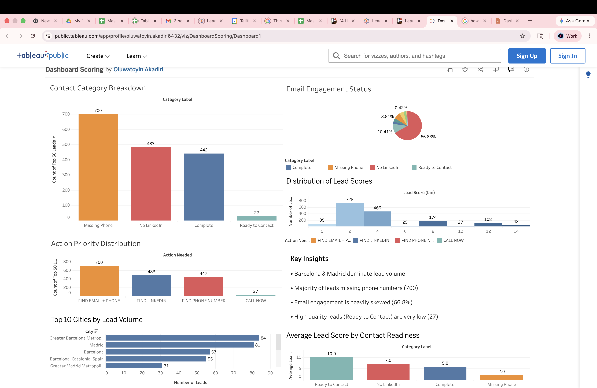

Strategy, market intelligence & growth analytics
Turning analysis into sharper business moves.
This strategy page brings together the work behind my portfolio’s business recommendations: competitor intelligence, pricing analysis, lead prioritization, audience segmentation, and market-entry thinking for healthcare and language-access products.
Strategy snapshot
Executive-ready
Strategic focus
From raw market signals to practical recommendations.
I approach strategy work as an analyst: define the decision, clean the evidence, compare the market, quantify the options, and translate findings into a clear next move. The goal is not just a dashboard or report — it is a decision path that a team can actually use.
My strongest strategy work combines business intelligence, competitor research, pricing analysis, segmentation, and sales prioritization so leaders can see where the opportunity is, what the risk is, and what to do next.
Strategy workstreams
Professional strategy capabilities.
Competitor & pricing intelligence
Mapped competitor positioning, pricing models, geography, certification signals, AI capability, and B2B/B2C offerings to identify market gaps and priority threats.
Lead prioritization strategy
Converted fragmented prospect data into a scoring framework that ranked the most actionable leads and clarified next-best outreach actions.
Audience & growth analysis
Used LinkedIn performance and audience data to understand reach, seniority, location concentration, and engagement patterns that can inform content strategy.
Executive recommendation design
Translated analysis into concise recommendations around product positioning, accreditation, AI differentiation, outreach focus, and expansion opportunities.
Decision framework
A structured way to move from evidence to action.
Collect internal data, competitor signals, audience metrics, and market context.
Identify gaps, pricing patterns, readiness issues, and high-impact business questions.
Score opportunities by quality, urgency, feasibility, and decision value.
Present focused next steps with clear evidence and practical implementation paths.
Featured strategy assets
Explore the work behind the recommendations.

Lead strategy
Top 50 Lead Prioritization
Scoring logic and outreach segmentation that supports focused sales action.
View dashboard
Market strategy
Competitor Pricing Intelligence
Market scan covering pricing, positioning, AI maturity, and expansion recommendations.
Read case studyStrategy + analytics
Need data that points to the next move?
I combine analytical depth with business context, helping teams turn evidence into priorities, recommendations, and action plans.